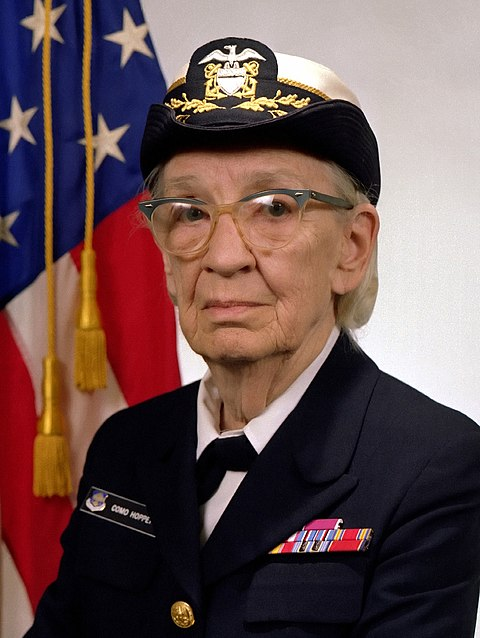

 Grace Hopper was a trailblazing computer scientist and U.S. Navy rear admiral whose groundbreaking work revolutionized modern computing. Known as the “Queen of Code,” she developed the first compiler, making programming languages accessible and paving the way for COBOL. Hopper’s innovative spirit, commitment to progress, and advocacy for women in technology cemented her legacy as one of the most influential figures in tech history. Explore her remarkable journey of resilience, creativity, and leadership.
Grace Hopper, born Grace Brewster Murray on December 9, 1906, in New York City, demonstrated an early passion for learning and an insatiable curiosity about how things worked. As a child, she once dismantled seven alarm clocks to understand their mechanisms, a trait that hinted at her future in problem-solving and innovation. Hopper excelled academically, earning a bachelor’s degree in mathematics and physics from Vassar College in 1928. Her ambition led her to Yale University, where she earned a master’s degree in 1930 and a Ph.D. in mathematics in 1934—an extraordinary achievement for a woman in a male-dominated field at the time. She later returned to Vassar as a professor, shaping young minds and laying the groundwork for her pioneering career. Hopper’s formative years were marked by a relentless drive to challenge norms, a trait that would define her legacy in computing, military service, and cultural impact.
Grace Hopper’s career was a journey of groundbreaking achievements that bridged the worlds of computer science, military innovation, and cultural transformation. During World War II, Hopper joined the U.S. Navy Reserve, where she was assigned to the Bureau of Ordnance Computation Project at Harvard University. There, she worked on the Mark I, one of the first programmable computers, documenting its operations and pioneering early programming concepts. After the war, Hopper joined the Eckert-Mauchly Computer Corporation, contributing to the development of UNIVAC I, the first commercial electronic computer. Her most notable contribution during this time was the invention of the first compiler, a tool that translated human-readable instructions into machine code. This revolutionary innovation laid the foundation for modern programming and paved the way for the development of COBOL (Common Business-Oriented Language), a language that brought computing to the business world and is still in use today. Hopper’s role in advancing machine-independent programming languages transformed the tech industry. Her influence extended beyond technology, as she tirelessly advocated for diversity and inclusivity in computing, inspiring countless women and underrepresented groups to pursue careers in STEM fields.
Retirement was merely a new chapter for Grace Hopper, as she remained an active and influential figure well into her later years. Although she retired from the Navy Reserve in 1966, she was recalled to active duty in 1967 to help standardize the Navy’s computing systems. Hopper continued serving until her final retirement in 1986, becoming one of the oldest active-duty commissioned officers in U.S. Navy history at the rank of Rear Admiral (lower half). Post-retirement, Hopper worked as a senior consultant for Digital Equipment Corporation, where she traveled extensively, lecturing and advocating for advancements in computing. Her lively presentations and witty anecdotes captivated audiences, earning her the affectionate nickname “Grandma COBOL.” She used her platform to encourage young people to innovate boldly, famously quipping, “It’s easier to ask forgiveness than permission.” Grace Hopper’s retirement years were a testament to her enduring commitment to progress and mentorship. Her contributions were recognized with numerous awards, including the National Medal of Technology and Innovation. Today, her legacy lives on, not only in the systems and programming languages she helped create but also in the inspiration she provided to generations of innovators and pioneers.
In August 1982, then-Captain Grace Hopper delivered a lecture titled “Future Possibilities: Data, Hardware, Software, and People” to National Security Agency (NSA) employees. In this presentation, she discussed the evolution of computing technology and its implications for the future. Hopper emphasized the transition from large, centralized computers to more distributed systems, highlighting the potential of microcomputers and the importance of understanding information flow within organizations. She drew parallels between the early days of the automobile industry and the burgeoning field of computing, cautioning against focusing solely on individual components without considering the broader system. She also addressed the significance of data security, the value of information, and the necessity for adaptable software and hardware solutions. Her insights underscored the need for a holistic approach to information management and the importance of innovation in addressing emerging challenges in the digital age. This lecture, recently declassified and made available by the NSA, offers valuable perspectives on the foundational principles of technology and leadership. It reflects Hopper’s forward-thinking mindset and her contributions to computer science and the military. Long thought lost to time because it was recorded on media no longer supported by modern playback equipment, the lecture was recently recovered and released to the world. You can watch it in two parts below.
The Grace Hopper Celebration (GHC) is the largest gathering of women and non-binary technologists, organized annually by AnitaB.org. Established in 1994 by Dr. Anita Borg and Dr. Telle Whitney, the event honors the legacy of computing pioneer Rear Admiral Grace Hopper and aims to amplify the contributions of women in technology. Connect with potential employers, mentors, and collaborators to propel your career forward. • Champion Diversity: Be part of a movement striving for inclusivity and representation in the tech industry. For more information and updates on the Grace Hopper Celebration, visit the official website: Attending GHC provides a unique platform to celebrate the achievements of women in technology, gain valuable insights, and contribute to the ongoing efforts toward a more inclusive tech community.
For mor details, Visit GHC 2025